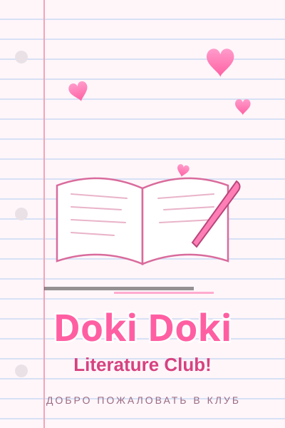

Уроки
Обычный школьный день — до звонка, после которого начинается самое интересное.

Главная › Аниме игры › Литературный клуб
Милая визуальная новелла о школьном Литературном клубе, стихах и четырёх необычных девушках… которая очень быстро перестаёт быть просто милой. Лучшее, что можно сделать, — начать её, зная как можно меньше.
Doki Doki Literature Club! — визуальная новелла студии Team Salvato (автор — Дэн Сальвато), выпущенная бесплатно 22 сентября 2017 года. Игра быстро стала культовой благодаря тому, как обращается с ожиданиями игрока.
Главный герой — обычный старшеклассник, которого подруга детства Саёри уговаривает вступить в Литературный клуб. Там его встречают президент клуба Моника и участницы Нацуки и Юри. Впереди — подготовка к школьному фестивалю, обмен стихами и разговоры после уроков.
В 2021 году вышло расширенное издание Doki Doki Literature Club Plus! — для консолей и ПК, с дополнительными побочными историями, новой музыкой и галереей материалов.
Как устроен игровой цикл — без единого спойлера.
Обычный школьный день — до звонка, после которого начинается самое интересное.
Чай, сладости, разговоры о книгах и планы на школьный фестиваль.
Вечером герой сочиняет стих, выбирая слова, которые понравятся одной из девушек.
На следующий день участницы читают стихи друг друга и делятся впечатлениями.
Из набора слов нужно выбрать те, что понравятся одной из участниц. От выбора зависит, с кем герой проведёт больше времени.
Простые, светлые и эмоциональные слова — о счастье, грусти, дружбе и тёплых моментах.
Милые и короткие слова — всё, что звучит мягко, по-детски и очаровательно.
Сложные, образные и мрачноватые слова — для тех, кто любит глубокие метафоры.
✍️ Слова выше — примеры в духе каждой героини, а не точный список из игры. Каждое стихотворение потом обсуждают в клубе — по стихам можно многое понять о самих девушках.
Только то, что игрок узнаёт в самом начале.
Основала клуб и старается, чтобы каждому участнику было в нём хорошо, а каждое собрание проходило интересно.
Это она привела героя в клуб — и больше всего на свете хочет, чтобы все вокруг были счастливы.
Обожает мангу, печёт сладости и горячо спорит, что милое — тоже настоящее искусство.
Любит чай и книги с мрачной атмосферой. Раскрывается, когда разговор заходит о литературе.
Без спойлеров: только то, чем игра запоминается.
Пастельные цвета, аниме-спрайты, весёлая музыка и типичные ситуации жанра — первые часы игра выглядит именно так.
DDLC знает правила жанра и сознательно ими пользуется. Самое сильное в ней — моменты, к которым невозможно подготовиться.
Стихи, реплики и мелочи интерфейса складываются в общую картину. Внимательный игрок заметит гораздо больше.
Лёгкий саундтрек с главной мелодией клуба, которая звучит по-разному в разных сценах и меняет настроение эпизодов.
Не ищите спойлеры, не спешите, сохраняйтесь и проходите игру до конца — история раскрывается целиком только при полном прохождении.
Для тех, кто прошёл оригинал: дополнительные истории о жизни клуба, новая музыка и коллекция материалов.